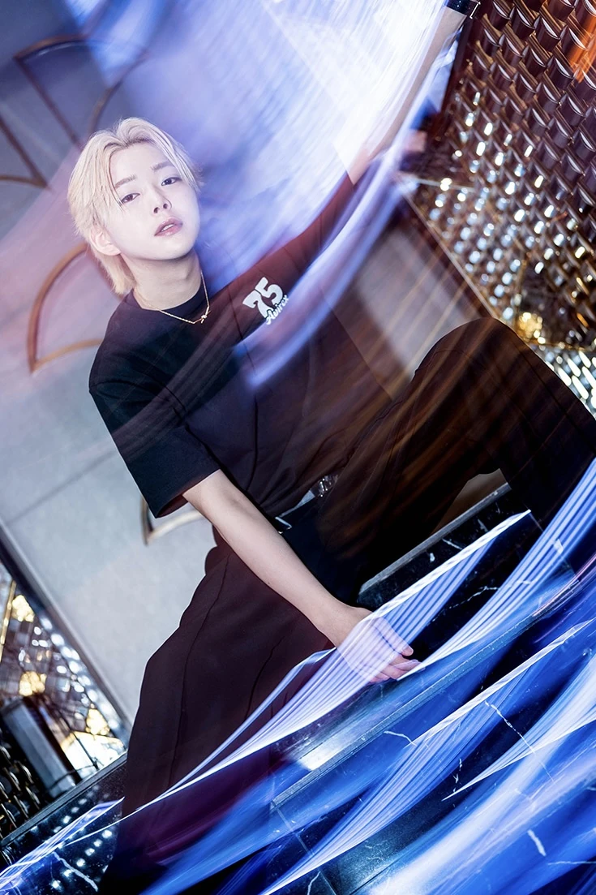
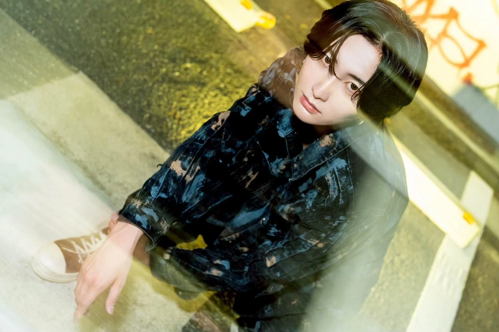

本文へ移動
INDEX
トップページ
ABOUT XEN
XENについて
STUDIO
スタジオ
CREATOR
クリエイター
WORKS
制作・作品
STORYBOOKS
ストーリーブック
ANIMATION
アニメーション
SOUND
音楽
CINEMATIC
映像
SNAP
写真
DESIGN
デザイン
APPAREL
アパレル
ARCHITECTURE
建築
SPACE
空間
ARTWORKS
アートワーク
SNS MANAGEMENT
SNS運用
PRICE LIST
料金一覧
CONTACT
制作相談
XEN | CREATIVE STUDIO JAPAN
SNAP
写真作品
PORTFOLIO


×
←
→
元の画像を開く